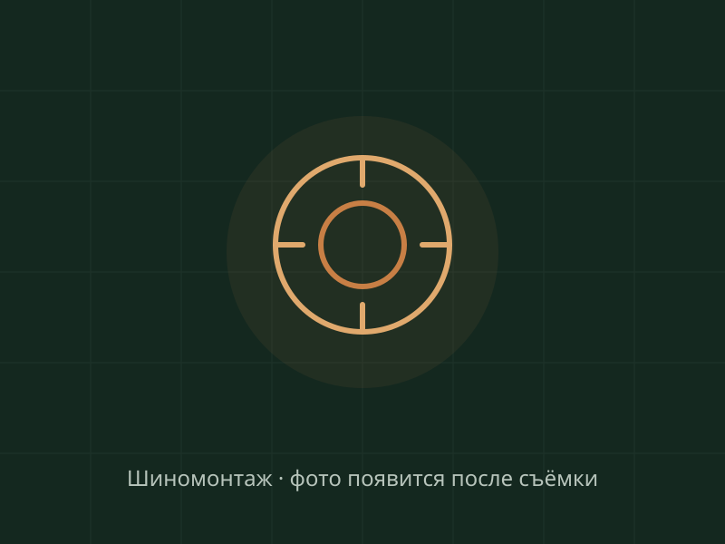

Колёса
Шиномонтаж легковой и грузовой, балансировка, правка и прокатка дисков, ремонт порезов и грыж, вулканизация, сезонное хранение шин. То, с чем приезжают чаще всего — и что нужно сделать быстро и ровно.
Шиномонтаж и дискиШиномонтаж легковой и грузовой, балансировка, правка и прокатка дисков, ремонт порезов и грыж, вулканизация, сезонное хранение шин. То, с чем приезжают чаще всего — и что нужно сделать быстро и ровно.
Шиномонтаж и дискиТО и аппаратная замена масла, ходовая и тормоза, рулевые рейки, развал-схождение, двигатели, АКПП и МКПП, дизельные форсунки, замена лобовых стёкол. Обслуживание, которое не допускает сюрпризов в дороге.
Ремонт и обслуживаниеКомпьютерная диагностика, автоэлектрика, ремонт и заправка кондиционеров. Начинаем с причины: находим неисправность, показываем её и согласуем смету — до начала работ.
Диагностика и электрикаМы — автосервис и шиномонтаж на улице Портовой, 439: рядом с остановкой «3-й Поселковый» и базой «Бум». Принимаем легковые и коммерческие автомобили ежедневно, с 9:00 до 19:00.
За одним визитом здесь закрывают и «переобуться», и стук в подвеске, и горящий «чек»: от балансировки до ремонта двигателя и АКПП. Правило одно для всех работ — сначала показываем проблему и называем стоимость, потом берёмся за инструмент.

Перечень и стоимость — до первого оборота ключа. Согласовали — работаем.
Гарантия есть; условия и срок фиксируются в заказ-наряде по каждой операции.
Один график всю неделю — удобно планировать визит до или после работы.
Грузовой шиномонтаж и обслуживание парков: «Газели», маршрутки, спецтехника.
Опишите задачу в форме записи или позвоните — выберем время визита, чтобы вы не сидели в живой очереди.
Поднимаем, смотрим, при необходимости считываем ошибки. Показываем проблему вам — на детали, а не «на словах».
Перечень работ и стоимость — до начала ремонта. Что критично сейчас, а что доживёт до весны — говорим прямо.
Делаем согласованное, показываем заменённые детали, выдаём заказ-наряд с гарантией. Дальше — по записи на ТО.
Изображения — заглушки: реальные фото «до/после» появятся после съёмки в сервисе (см. бриф для владельца). Клик по карточке открывает просмотр: Esc — закрыть, ← → — листать, на телефоне — свайп.
«Поймал саморез по дороге на работу. Позвонил, приехал — отремонтировали за полчаса, показали место прокола до и после. По деньгам — как и сказали по телефону, ни рублём больше.»
«Первый раз была в этом сервисе. Понравилось, что сначала всё показали и объяснили, потом назвали сумму — и только после моего «да» начали. Машину отдали в тот же день, фото старых деталей показали.»
«Влетел в яму на Всесоюзной, диск повело. Думал — под замену. Мастера откатать предложили правку, честно предупредили про ограничения. Биение ушло, езжу второй месяц.»
«Обслуживаем здесь машины небольшого парка: грузовой шиномонтаж, тормоза, ходовая. Удобно, что можно записать несколько машин на разные дни и не ставить работу на паузу.»
Отзывы выше — демонстрационные примеры оформления. В продакшне блок будет показывать реальные отзывы с источником и датой, без «средней температуры»: оценки на разных площадках различаются, и мы это не прячем. Приведение карточек (название, адрес, телефон, часы) к единому виду — отдельная задача запуска.
Список не полный — если вашей марки здесь нет, позвоните: +7 (928) 906-57-00. Бегущая строка останавливается при наведении; с «уменьшением движения» в настройках системы показывается статичным списком.
Оператор: ИП Яковенко Павел Иванович, ИНН 341010400388. Адрес для обращений: Ростов-на-Дону, ул. Портовая, 439. Тел. +7 (928) 906-57-00, e-mail avtotehservis439@mail.ru.
Какие данные собираем: имя, телефон, сведения об автомобиле (марка, модель, год, VIN, пробег), выбранные услуги, желаемые дата и время, содержание сообщения, прикреплённые фото.
Зачем: чтобы связаться с вами, согласовать перечень работ и стоимость до начала ремонта, записать на визит.
Как храним: данные хранятся на серверах в Российской Федерации, доступ — только у сотрудников сервиса. Срок хранения — до достижения цели обработки либо до отзыва согласия.
Отзыв согласия: по телефону или на e-mail — прекратим обработку и удалим данные, если их хранение больше не требуется законом.
Это демонстрационный текст для мокапа. Перед запуском сайта политику нужно утвердить у владельца и привести в соответствие 152-ФЗ (с учётом изменений, действующих с 01.09.2025).
Нажимая кнопку отправки формы, я свободно, своей волей и в своём интересе даю согласие ИП Яковенко Павел Иванович (ИНН 341010400388) на обработку моих персональных данных:
Обработка включает сбор, запись, хранение, использование и передачу сотрудникам сервиса для выполнения заявки. Согласие можно отозвать в любой момент — по телефону +7 (928) 906-57-00 или письмом на avtotehservis439@mail.ru.
Демо-мокап: форма ничего не отправляет и данные не собирает.